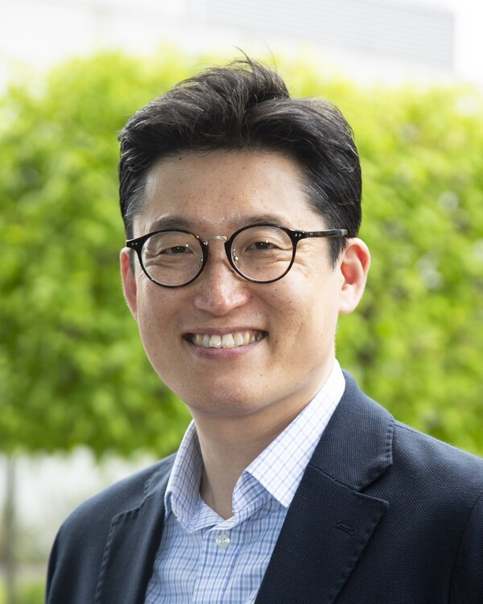
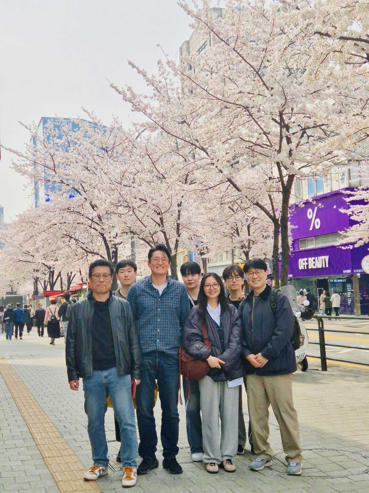
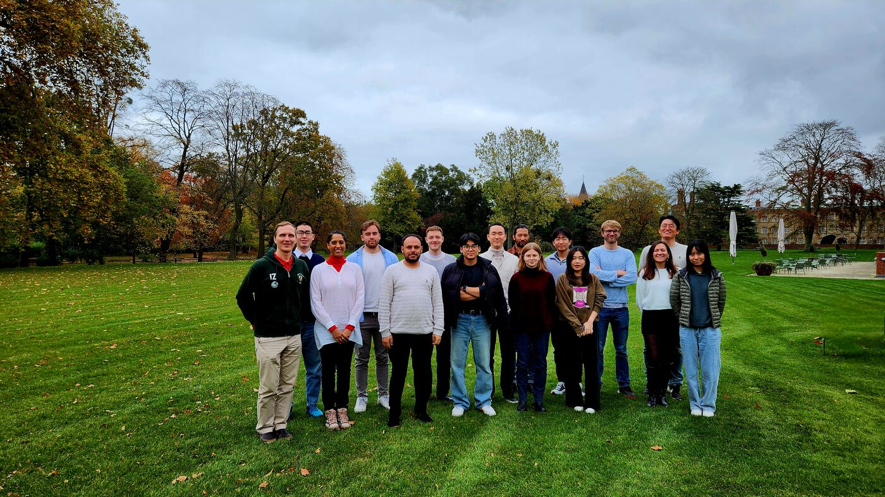
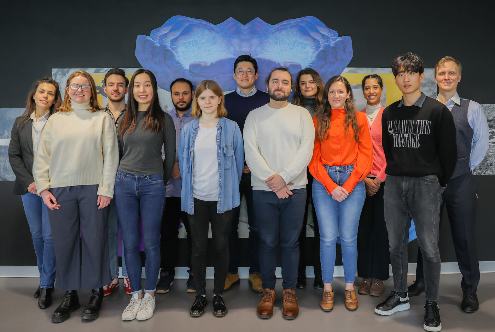
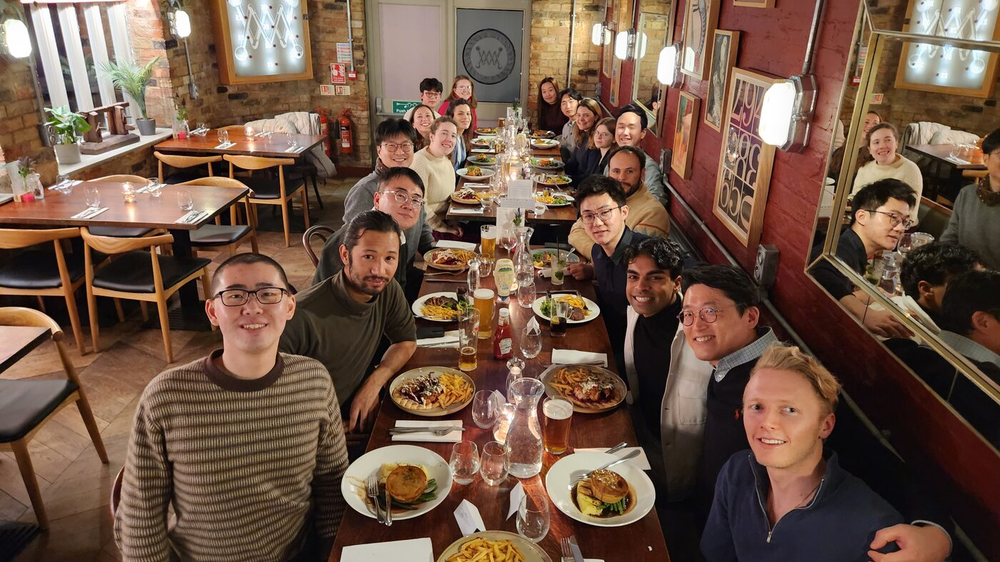
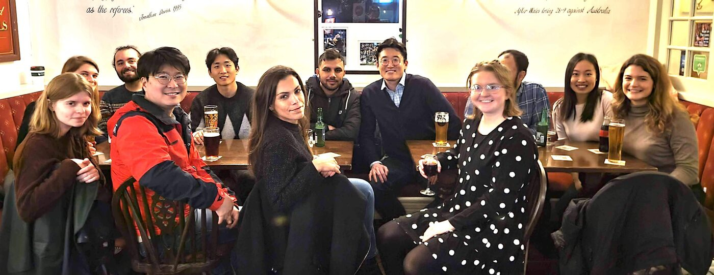
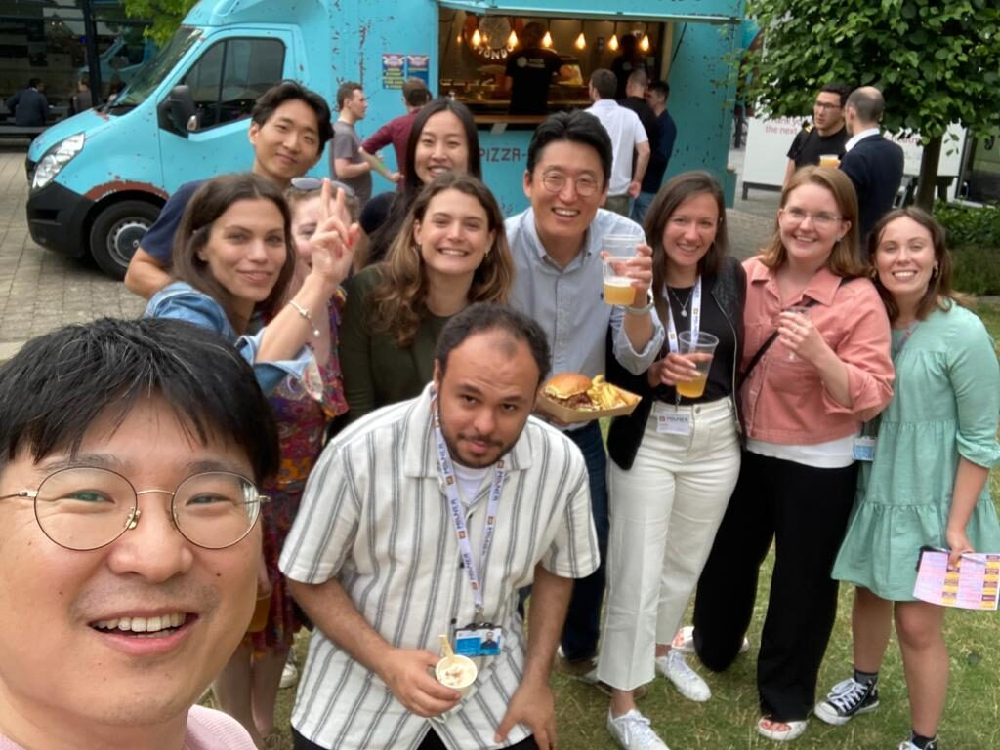

Han Lab at Cambridge & Yonsei — one team, two cities, pioneering AI-driven drug discovery through quantum methods and biomedical big data.
QBIT Lab, led by Professor Namshik Han, builds computational platforms that merge quantum algorithms, artificial intelligence, and multi-modal biomedical data to accelerate drug discovery.
Since September 2025, the lab has expanded from its Cambridge base at the Milner Therapeutics Institute into a second site at Yonsei University's Department of Quantum Information. The two groups operate as a single integrated team across the UK and Korea.
Our methods span quantum walk, quantum annealing, and quantum embeddings for knowledge graphs, quantum machine learning, network-based deep learning, causal reasoning, and large language models for scientific literature — applied to cancers, neurodegenerative disorders, inflammatory bowel disease, respiratory illness, and rare conditions.
We integrate quantum computation, AI architectures, and multi-modal biomedical data into a single translational pipeline — from algorithmic innovation through to new therapeutic targets, drug repositioning candidates, and biomarkers.
Quantum algorithms for problems where classical computing falls short — biological network exploration, combinatorial optimisation, and high-dimensional embeddings.
Purpose-built AI for biomedicine — network deep learning, causal reasoning, and LLM-driven machine reading for knowledge graphs over literature and patents.
The full spectrum — multi-omics with clinical annotation, protein structure including AlphaFold, single-cell and spatial transcriptomics, patient-derived organoid data, and literature.
Therapeutic targets for undruggable and difficult diseases.
Drug repositioning candidates with mechanistic rationale.
Stratification markers for clinical trial design.
A group of 40 researchers across Cambridge and Yonsei working at the intersection of quantum computing, AI, and biomedicine.

Since 2016, more than 75 researchers have been part of the lab across Cambridge and Yonsei — including 10 at the postdoctoral and senior-scientist level (five now established elsewhere and five currently with the group, alongside our Yonsei research professor), 13 PhD researchers, 24 MSc researchers, and many undergraduate and visiting scientists. Our alumni have gone on to pursue PhDs at the University of Cambridge and to join AstraZeneca, Boehringer Ingelheim, LifeArc, CardiaTec, Synteny, and leading academic institutions across the UK, Korea, and beyond.
Listed below are those who have completed their time with the lab.
A team built around shared curiosity — at the bench, in the pub, on the lawn. Moments from Cambridge and our growing collaboration with Yonsei.






A selection of recent and landmark papers. The complete list of 40+ publications is available via Google Scholar.
Epigenetic biomarkers in inflammatory bowel diseases — computational challenges and opportunities
Department of Quantum Information
Yonsei University
Milner Therapeutics Institute
Jeffrey Cheah Biomedical Centre
University of Cambridge
We welcome enquiries from academic groups, clinicians, and industry partners working in computational drug discovery, multi-omics, and quantum-AI methods.